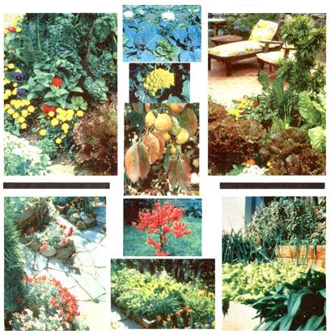

This issue's mini-manual will give you the basics of a useful and decorative plant-raiser's art
It started innocuously enough, when a small promotional brochure an nouncing something called Designing and Maintaining Your Edible Landscape-Naturally quietly wormed its way, through mounds of unread material, to the top of an unorganized staffer's desk. "Gee, " that unsuspecting MOTHER said, "somebody's doing a book on edible landscaping. I think I'll drop this Robert Kourik a line, just to see if he knows what he's talking about. "
We soon received reams of computer-printed manuscript and learned that Mr. Kourik was taking two years off from his regular job to write what could turn out to be the most comprehensive guide in existence to growing vegetables, fruits, flowers, and herbs for both ornamental and culinary purposes. Reading the draft quickly convinced us that Robert did know his subject . . . quite well, in fact. And how did he gain such hard-to-find knowledge? Why, from seven years at that job he was taking a leave from-namely, creating professionally designed edible landscapes for homeowners!
When we finished Kourik's manuscript, we couldn't wait for him to get his book into print . . . we wanted to share it with you right away. So we hereby present some highlights from that not yet published volume, Designing and Maintaining Your Edible Landscape-Naturally. If you've ever wanted some good advice on how to grow foods that are tasty and ornamental at the same time, you'll find it in the following excerpt.
Roll back part of your lawn and renew the age-old tradition of surrounding a home with a productive landscape. Edible landscaping is a way to grow vegetables, berries, herbs, fruits, nuts, and ornamental plants in attractive and harmonious groupings, without the use of dangerous chemicals. As you nurture your edible landscape, it will sustain you and your family with benefits that go far beyond good food.
Many otherwise useful gardening books forget that you, the gardener, are the most important living thing in the garden. Often, they focus only on the plants, omitting the ways you can garden with pleasure in a busy life. If gardening isn't fun, why bother? Most of us aren't growing food for survival. It shouldn't be a chore. Find pleasure in your landscape; play with the plants. Experiment. Break some of the rules. With each passing season, you will find more beautiful and more fruitful ways for you and your landscape to grow .
I started experimenting early on with unusual gardening and landscaping techniques, colorful vegetables, and exotic food plants. My work-and the work of other edible-landscapers-has begun to prove that landscapes can be ornamental and tasty, colorful and useful.
When my landscape maintenance business first began, I took care of completely ornamental landscapes. Over time, more and more clients wanted vegetable gardens, but I noticed that too often the vegetable garden was treated like a second-class landscape, hidden away behind the dog pen or garage.
I soon realized there is nothing second-class about food plants, and that I could design and plant an edible and gorgeous landscape. The beauty and variety of a well-designed edible landscape really impress my clients and their friends and visitors.
A good traditional ornamental landscape combines colors, textures, smells, and sounds, but usually neglects flavors. Your edible landscape will stimulate all the senses-fragrant daylilies for the flower order that can be used in salads or stuffed with herb cheeses, a colorful ground cover of a variegated gold and green thyme for soups and casseroles, a soft herbal sitting bench planted with chamomile that can be harvested for tea, a cool, relaxing arbor laden with the fruits of kiwi vines and grapevines. The possibilities are endless.
There are hundreds of examples of food plants that add color to your landscape:
Ornamental kale provides a spectacular display of fall and spring color, and it has the same taste as garden kale. In the photograph on page 40, the ornamental kale is planted among lettuce for a beautiful contrast in color and form.
Ruby chard, `Romanesco' broccoli, nasturtiums, and `Radicchio' (an Italian red-leaved chicory) are all true ornamentals, and they're edible too.
Liberated from the conventional garden, colorful vegetables have a place in the edible landscape .
There are many perennial edibles that have as much color as ornamentals.
The silver-grey highlights of artichokes and the bold pattern of their leaves are as dramatic a show as any plant makes.
The fiery fall colors of an Oriental chestnut (Castanea mollissima) , Asian pear (Pyrus pyrifolia) , cherry (Prunus avium) , or peach (Prunus persica) are as impressive as those of virtually any ornamental shade tree.
Ripe Oriental persimmons (Diospyros kaki) hanging on the bare branches of a fog-shrouded tree are indeed a magical sight. The glossy green leaves and spectacular fall color add their highlights in season.
If you like the formal look, both rosemary (Rosmarinus officinalis) and the silver-grey-leaved pineapple guava (Feijoa sellowiana-for warm-winter climates) are easily sheared to almost any form. The genetic dwarf peaches and nectarines are well behaved, dense, shrublike fruit trees. The hot pink, double flowers of the genetic dwarf `Garden Beauty' nectarine are some of the most dazzling to be found.
An edible landscape can be small, but elegant and picturesque. Consider the appeal of the landscape planted by Helen Malcolm-Neeb near Big Sur, California. A radiant mixture of colorful red chard, two kinds of lettuce, narrow-leaved chives, and edible violas mingles with the ornamental blossoms of alyssum. All are arranged, reminiscent of a flower bouquet, beneath a young miniature `Garden Prince' almond, which displays a delicate pink blossom each spring.
It's time for the prejudice against edibles as ornamentals to wither and be replaced by the respect they deserve as landscape plants.
My garden is beautiful, but it is also for flavor. Different, better tastes. The kind of flavor no grocery store could possibly offer.
Homegrown tastes best. My reason for starting to garden was to have those homegrown tastes no money can buy. A store-bought `Granny Smith' apple is good, but one fresh-picked from the tree and fully ripe is superb.
|
 Three views of the kelleys' edible landscape, designed by the author. Kourik coped with the small, steep site by making terraced beds separated by flagstone walkways. The terraces are located near the house to make harvesting easier?the picture at left was taken from the kitchen window?and combine a colorful array of herbs, vegetables, and flowers. |
|
|